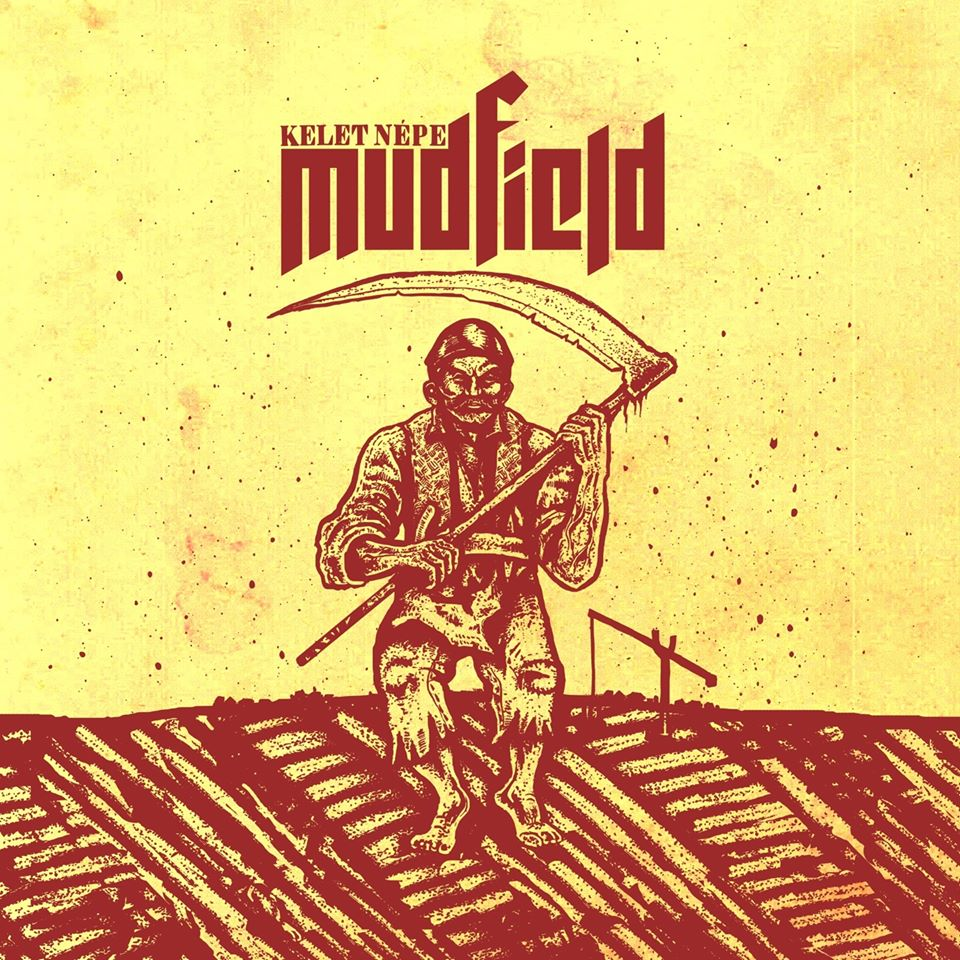

Kelet népe
A Mudfield 2. nagylemeze a Kelet népe címre hallgat, amely 2020. február 21-én jelent meg. Az albumon 10 nóta lelhető fel. Még 2020-ban megjelent ezen album mellé egy EP, amellyen 6 akusztikus átgondolás található (Máté elmondása szerint a jövőben terveznek kiadni több akusztikus EP-t is, illetve akusztikus koncertet is tervenek előadni).
2 év után, a banda bejelentette egy képpel együtt több platformon is, hogy az album sikeresen aranylemezessé vált.
Dalok
- Állat vagyok
- Égesd el
- Az én hazám
- Mindennapos forradalom
- Álmatlan
- A jobbik részem
- Hold
- Járvány
- Békességben
- Hullócsillagok